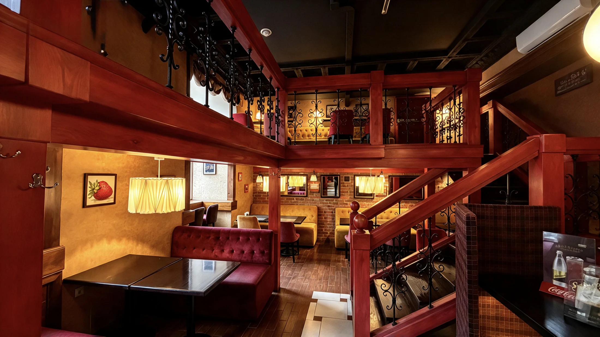
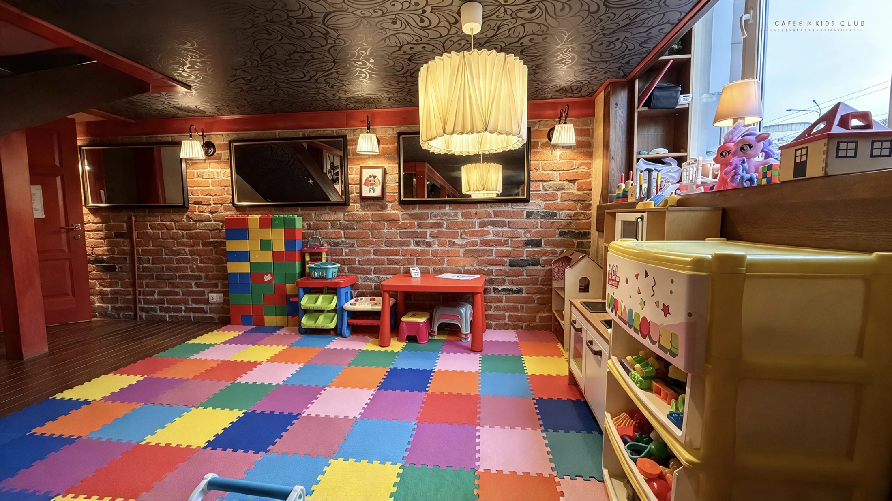
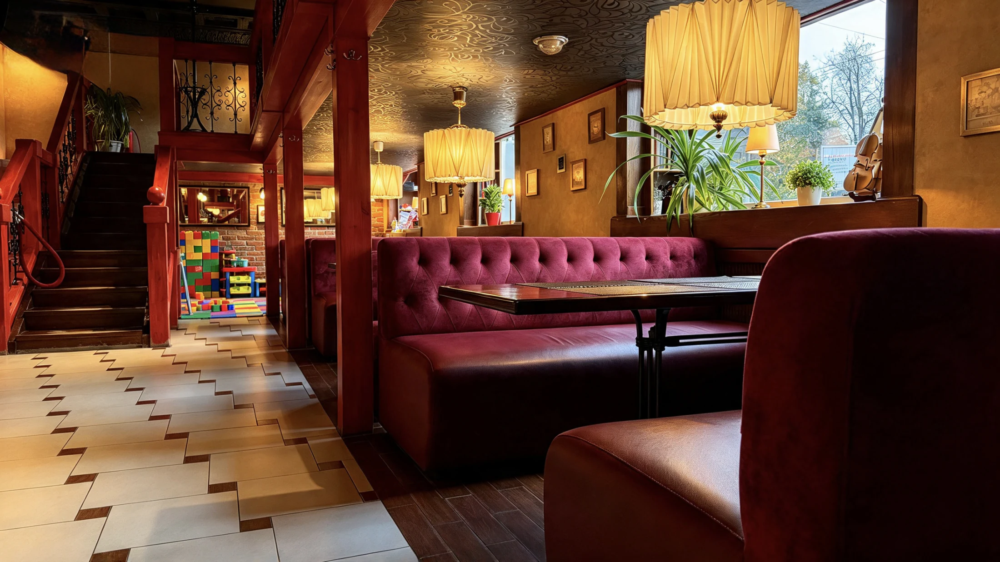

Ресторан ФаСоль в Гомеле

Просто люби…

Бар

Для маленьких
гостей
О нас
«ФаСоль» — больше, чем ресторан. Это место, где хочется собираться вместе
Мы верим, что хороший ресторан складывается из главного: свежих продуктов, мастерства приготовления, качественного сервиса и атмосферы, в которой каждому комфортно

В меню — лучшее из европейской кухни: от неспешных завтраков и сытных домашних обедов до сочных мясных и рыбных блюд с дымком, приготовленных в нашей фирменной печи Josper
В «ФаСоль» приятно начать день за чашкой ароматного кофе, встретиться с друзьями за бокалом вина или завершить насыщенный день семейным ужином
Европейская кухня с характером
Знакомые блюда в авторском прочтении, оригинальные рецепты и щедрые порции
Вкус настоящего огня
Готовим в печи Josper — для сочности, румяной корочки и того самого аромата гриля
Комфортно всей семье
Пока взрослые наслаждаются вечером, маленькие гости могут играть и открывать для себя детскую комнату
Внимательный сервис
Без долгого ожидания
Атмосфера ресторана
Ждём вас
Гомель, Советская, 36+375 (44) 790-33-33- Понедельник — пятница
- 9:00–23:00
- Суббота — воскресенье
- 10:00–23:00